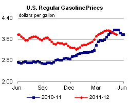

Released: May 9, 2012
Next Release: May 16, 2012
Gasoline consumers welcome the fall this spring
As May began, the retail price of regular gasoline continued its recent decline from levels reached earlier this spring. As of May 7, prices averaged $3.79 per gallon, down 15 cents per gallon since April 2. If last week's crude oil price declines persist, the recent fall in gasoline prices could continue. However, while the forecast in the U.S. Energy Information Administration's (EIA) May 2012 Short-Term Energy Outlook (STEO) is showing lower crude oil and petroleum product prices this summer than were projected a month ago, it does not reflect a continuation of the sharp price drop seen last week. STEO's May forecast has both global demand and supply growth higher in 2012 than in the April projection, but with a bigger boost to projected supply. The revised market balance points to less price pressure than was seen a month ago.
Brent crude oil spot prices, which are indicative of the conditions in the global market for waterborne light sweet crude not subject to transport constraints, fell about $6 per barrel in April (from $126 per barrel on April 2 to $120 per barrel on April 30), but then dropped about $7 per barrel during the first week of May. West Texas Intermediate (WTI) began April at $105 per barrel, but stayed relatively flat through the month, likely supported in part by anticipation of the accelerated startup of the reversed Seaway pipeline in mid-May. However, WTI prices moved down with the rest of the global crude oil market during the first week of May.
During April, increasing concerns were voiced about the pace of economic growth, a key oil demand driver. At the same time, OPEC officials and key OPEC member countries expressed concerns over high prices, and data also suggested increased supplies from OPEC countries. Some analysts have suggested that last week's sharp drop in prices responded to U.S. employment data that dampened expectations for economic growth, and thus petroleum demand growth, as well as increased concern regarding the European economy. The May STEO forecast does not reflect a change for the worse in the economic situation. While the market reacted strongly to disappointing news, world balances still seem to point to crude prices returning to levels closer to those seen at the end of April.
With the recent decline in crude oil prices, gasoline wholesale prices seemed to have peaked in April -- earlier than usual. Gasoline spot prices on the Gulf Coast and New York Harbor fell more than crude oil prices in April, but dropped in line with crude oil prices the first week of May. Retail price changes lag changes in wholesale gasoline prices, and Monday's retail gasoline prices would not have fully captured last week's wholesale price decline.
For the May-through-September period, the May STEO projects a U.S. average Refiner Acquisition Cost of crude oil that is about $4 per barrel lower than last month's forecast (Figure 1). Retail gasoline prices are about 17 cents per gallon ($7 per barrel) lower than in the prior forecast, reflecting a falloff in gasoline crack spreads as well as crude oil price declines. The uncertainties in gasoline crack spreads (and ultimately in retail prices) turn in part on which East Coast refineries will remain in operation this summer. Sunoco has indicated it will extend operation of its Philadelphia refinery through July. Trainer, a Philadelphia-area refinery that was idled last fall, could be restarted if ConocoPhillips' sale of that facility to Delta Air Lines is completed soon. Delta has indicated plans to start production during the third quarter.

Gasoline prices fall for fifth straight week
The U.S. average retail price of regular gasoline decreased 4 cents this week to $3.79 per gallon, 18 cents per gallon lower than last year at this time. This marks the fifth straight week of decline, with the average price down 15 cents since April 2. The least expensive gasoline remains in the Gulf Coast for the third consecutive week, at $3.62 per gallon. The Midwest average price decreased about 3 cents to $3.72 per gallon, while the East Coast and Rocky Mountain prices both dropped to $3.76 per gallon. On the West Coast, the price increased by more than a cent to $4.14 per gallon, the most expensive in the Nation.
The national average diesel fuel price decreased by more than a penny to $4.06 per gallon, 5 cents per gallon lower than last year at this time. Prices dropped in all regions, with the Midwest and Gulf Coast prices the lowest in the Nation at $3.96 per gallon. The Rocky Mountain regional average price fell more than 2 cents to $4.05 per gallon, while the East Coast price decreased 2 cents to $4.11 per gallon. Rounding out the regions, the average diesel price on the West Coast fell nearly 2 cents, but remains the highest in the Nation at $4.31 per gallon.
Propane stocks post a strong build
Last week, propane inventories grew across all regions of the United States, adding 2.5 million barrels to end at 51.0 million barrels, 77 percent higher than a year ago. The Gulf Coast region led the gain with 1.0 million barrels of new propane inventory, followed by the East Coast, which added 0.9 million barrels. The Midwest regional stocks grew by 0.5 million and the Rocky Mountain/West Coast region added 0.2 million barrels. Propylene non-fuel-use inventories represented 7.1 percent of total propane inventories.
Text from the previous editions of This Week In Petroleum is accessible through a link at the top right-hand corner of this page.
|  | |||||||
| Retail Data | Change From Last | Retail Data | Change From Last | ||||
| 05/07/12 | Week | Year | 05/07/12 | Week | Year | ||
| Gasoline | 3.790 | Diesel Fuel | 4.057 | ||||
|
|||||||||||||||||||||||||||
| *Note: Crude Oil Price in Dollars per Barrel. | |||||||||||||||||||||||||||
| Stocks Data | Change From Last | Stocks Data | Change From Last | ||||
| 05/04/12 | Week | Year | 05/04/12 | Week | Year | ||
| Crude Oil | 379.5 | Distillate | 120.8 | ||||
| Gasoline | 207.1 | Propane | 51.023 | ||||